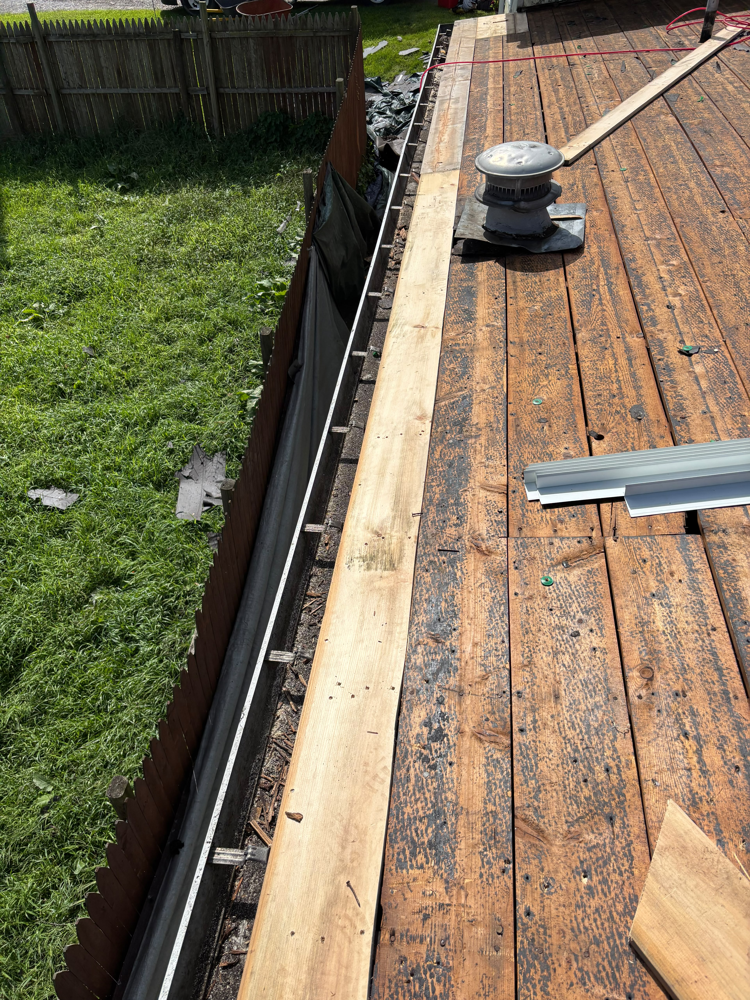

A blocked gutter in Pittsburgh doesn't just overflow. It holds water, that water freezes at the eaves, and the ice pushes meltwater back up under the bottom courses of shingle and into the wall. By the time a stain appears on your ceiling, you're looking at a roof repair rather than a cleaning bill.
We clear gutters by hand, bag the debris, flush every downspout, and tell you about anything we notice while we're up there. Most of the time that's nothing, and we say so.
What the job includes
What a visit covers:
- Hand clearing of the full run — leaves, grit, shingle granules and nests bagged and taken away rather than dropped on your beds.
- Downspout flush — with blockages cleared from the bottom up instead of pushed further into the elbow.
- Water test on every run — to confirm it drains where it's supposed to and at the speed it should.
- Hanger and seam check — so a loose section gets flagged and refastened before it comes down in a storm.
- A look at the roof edge — shingles, drip edge and fascia, all of which are visible from the ladder anyway.
- Photographs of anything we find — sent to you afterwards, whether or not it turns into work for us.
How the work runs
-
Book the right time of year
Late spring after seed drop and late autumn once the last leaves are down are the two visits that actually matter.
-
Clear it by hand
Scooping beats blowing. It's slower, it doesn't fling wet debris across the roof, and you can see what's coming out.
-
Flush and test
Water down every run and every downspout, watching for slow drainage and for leaks at the seams.
-
Check the hardware
Hangers, seams, end caps and the fascia behind them, refastened on the spot where it's a five-minute fix.
-
Report back
A short message with photos: what we cleared, what's holding up fine, and anything worth keeping an eye on.
Recent gutter cleaning work


Questions we get asked
How often should they be cleaned?
Twice a year covers most houses. Under heavy tree cover, make it three. If you can't remember the last time, that's the answer to when.
Do gutter guards mean I never have to clean again?
No, and anyone who tells you otherwise is selling guards. They cut the volume down a great deal, but fine grit and seed still get through and downspouts still need flushing.
Could I just do it myself?
Plenty of people do, and on a single-storey house with a shallow pitch that's a reasonable Saturday. Most gutter injuries happen on the second storey of a house built into a hillside, which describes an awful lot of Pittsburgh.
Free estimate, no pressure
We'll come out, look at the work, and give you a written number. What you do with it is up to you.